Plugin Version:
3.1.8
Plugin Version:
3.1.8
Overview
The Multitenant Workspace Management plugin allows a super user to manage workspaces directly inside the ProcessMaker interface. After logging into the Multitenant workspace, the super user will be able to:
- Create workspaces.
- Backup workspaces.
- Restore workspaces based on the generated backups.
- Clone workspaces.
- Delete workspaces.
- Enable/Disable workspaces.
The backup, restore, clone and delete operations aren't executed in real time. Instead, they are executed in the background, when the plugin's mttCron.php file is evaluated.
Therefore, make sure that the server where ProcessMaker is installed is configured to execute this file periodically, either as a cron job in Linux/UNIX servers or as a Scheduled Task in Windows servers. Moreover, the user who configures the backup, restore, clone or delete workspaces operations will receive an email notification indicating that these operations were completed successfully.
Disclaimer: The information on this page only applies to customers with an Enterprise license. This information does not apply to resellers or OEMs. Resellers and OEMs should contact their account manager for more information on how to use this plugin.
Requirements
Take into accout the following software compatibility requirements:
- This plugin version is available as of ProcessMaker 3.2.2 and later.
- Check the OS platform, MySQL version, web server and PHP version in the following Stack links:
- Supported Web Browsers
Installation
First of all, the Multitenant Workspace Management plugin needs to be installed and enabled inside ProcessMaker.
Login as a user, such as "admin", who has the PM_SETUP and PM_SETUP_ADVANCED permissions in their role. Then, go to ADMIN > Plugins > Enterprise Manager. Either install the Multitenant Workspace Management plugin by clicking on  Install from File and uploading the plugin file or by clicking on its Install Now button in the list of available plugins.
Install from File and uploading the plugin file or by clicking on its Install Now button in the list of available plugins.
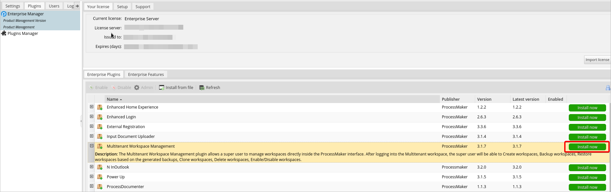
After installing the plugin, make sure that the Multitenant Workspace Management plugin is
 enabled.
enabled.

After Multitenant Workspace Management plugin is activated, the
 icon is displayed in the Enabled column.
icon is displayed in the Enabled column.
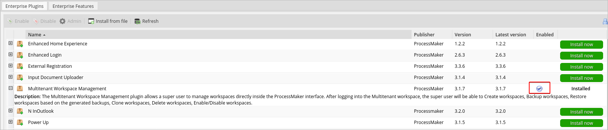
Configuration
Once the plugin has been installed, the Multitenant Installation option will appear under the Admin > Plugins sidebar.
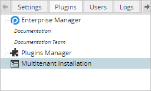
Click this option and an installation wizard will appear:
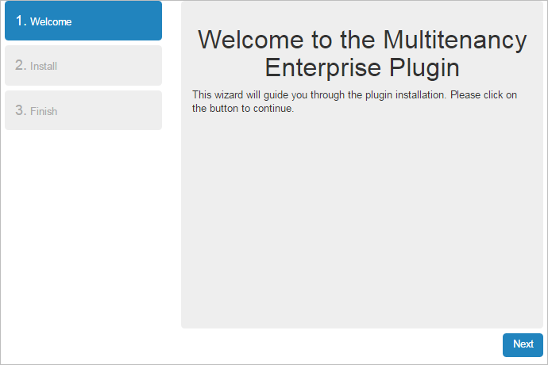
In the next screen, specify the super user who will manage the workspaces. Take note of these credentials, they will be used to log in to the Multitenant Workspace Management interface.
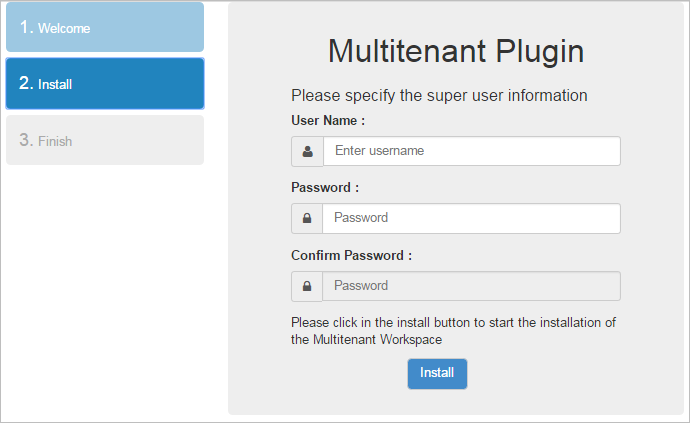
Note that both fields show a description of the username and password policy respectively. If the password does not meet the password policy, the Confirm Password field will continue to be blocked.
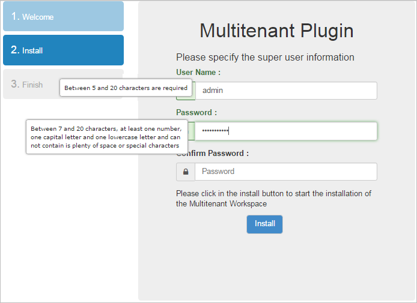
After entering the credentials, click the Install button and wait until the plugin has finished installing.

The following message will appear indicating that the workspace has been created.

Finally, click Next and in the next window, click the Login button to be redirected to the Multitenant Manager login screen.
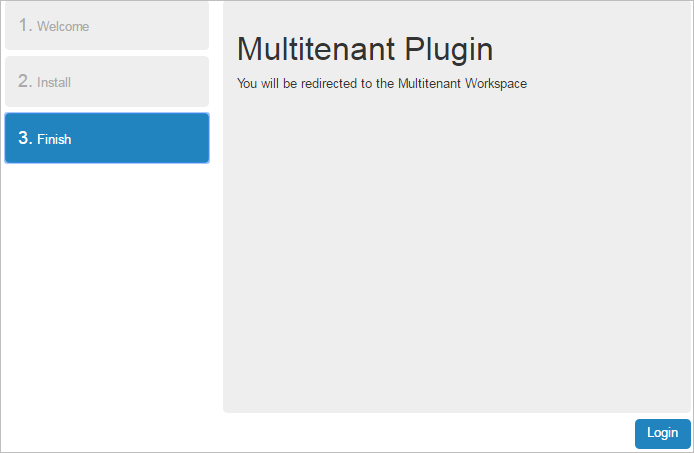
Accessing the Multitenant Workspace
The Multitenant plugin works as a separate workspace named Multitenant. The first time after the configuration, the browser will be redirected to:
http://{pm-server}/sysmultitenant/en/neoclassic/login/login
At this point it is necessary to upload the Enterprise license file, even if it was uploaded before.
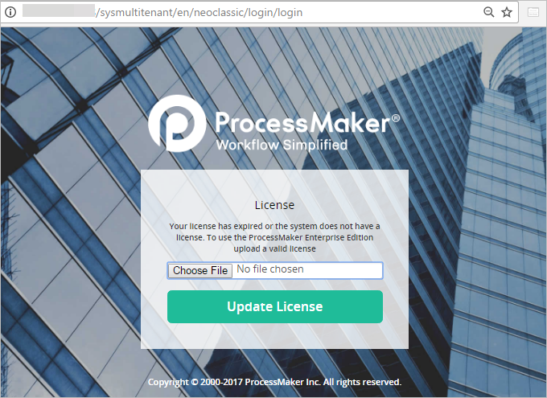
Once the license has been updated successfully, ProcessMaker will redirect the web browser to the multitenant login page:
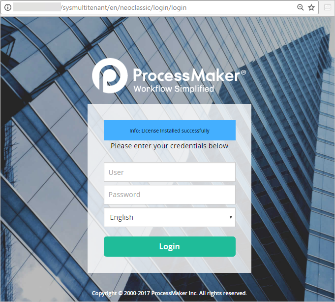
In the login screen of ProcessMaker set the Workspace to "multitenant":
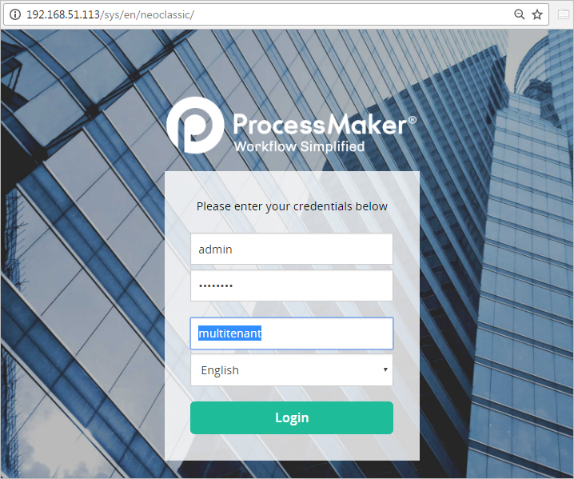
Another way to access the Multitenant workspace is to edit the URL of the login screen in the web browser so it directs to .../sysmultitenant/... :

Workspace Management Interface
After the first login, a pop-up message will ask if the user wants to search for existing workspaces.
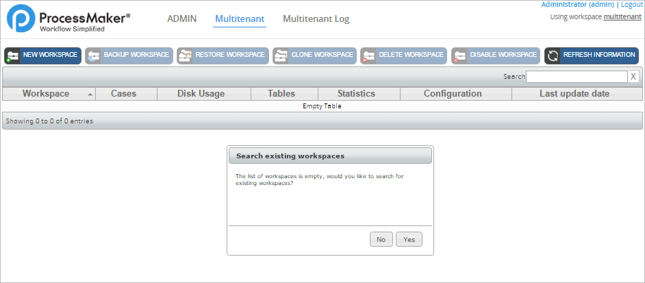
Click on Yes to start the searching process.
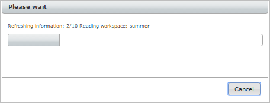
Once done, the following dialog will be displayed.
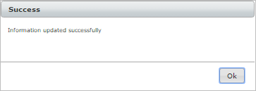
All the workspaces already present in the ProcessMaker installation will be listed.
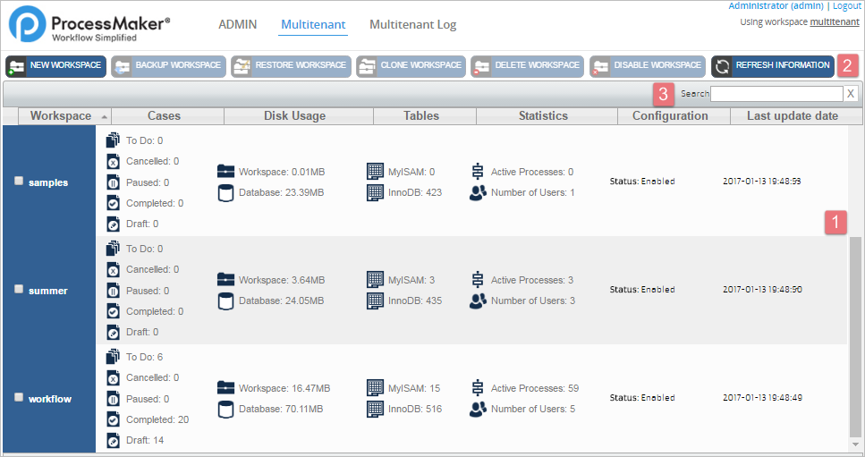
- Workspace Information: Displays information about the workspace, such as its name, cases, disk usage, tables and statistics.
- Actions Menu: Contains the main actions to manage workspaces.
- Search Field: Enter the name of a workspace to search for. This field will filter the possible matches while entering the workspace name.
Workspace Information
Each item in the list represents a workspace with its information detailed in each column.
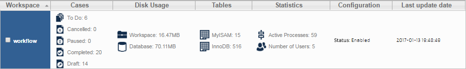
- Workspace: The workspace name.
- Cases: All the cases contained in the workspace.
- To Do: Shows the total number of cases stored in the inbox of all users.
- Cancelled: Shows the total number of cases that have been cancelled.
- Paused: Shows the total number of cases that were paused during their execution.
- Completed: Shows the total number of cases that reached an end event.
- Draft: Shows the total number of cases that are being edited or advanced by the user but have not yet been submitted to the next task.
- Disk Usage: The disk usage of both the workspace and the database.
- Tables
- MyISAM: Shows the number of tables held by the MyISAM engine.
- InnoDB: Shows the number of tables held by the InnoDB engine.
- Statistics
- Active Processes: Shows the number of processes being currently executed.
- Number of users: Shows the number of users in the workspace.
- Configuration: Shows the current status of the workspace: “enabled” or “disabled”.
- Last Update Date: Last datetime when the workspace was accessed.
Actions Menu
The main menu buttons are located in the top part of the panel under the Multitenant tab, and contains the following options to manage workspaces:
- New workspace
- Backup workspace
- Restore workspace
- Clone workspace
- Delete workspace
- Disable workspace
- Refresh information
Some of these actions will be executed when the user clicks on the option in the Multitenant Management interface, but the options to backup, restore or clone a workspace are not executed in real time. Instead, they are set as pending actions that will be executed when the multitenant cron file named mttCron.php is executed.
Note: Only one pending action can be executed at a time on a workspace, so the mttCron.php file needs to be executed before a second pending action can be executed on the same workspace.
New Workspace
Select this option to start the creation of a new workspace with a valid enterprise license. Fill in the following information about the new workspace:

Workspace
- Name: Enter a name for the new workspace with a maximum length of 30 characters or less. It is recommended to only use ASCII letters, numbers and underscores (_) to avoid problems.
- Database options. This section defines the MySQL database that will be created to hold data for the new workspace. Each database name can only have 16 characters or less. By default, the prefix "wf_" is added to the workspace name.
- Workflow database: The name of the database that will hold data about processes, cases, users, report tables, etc.
- Drop database if exists: Check this option to delete any existing databases that have the same name as the ones above.
- Workspace administrator. Defines the administrator credentials for the new workspace. This user will have the "PROCESSMAKER_ADMIN" role, which has permissions for all the ProcessMaker functions.
- Username: Enter the username of the administrator of the new workspace. By default, the username is "admin".
- Password: Enter the password of the administrator of the new workspace. By default, the password is "admin".
- Re-type password: The password must be entered twice to confirm it.
License
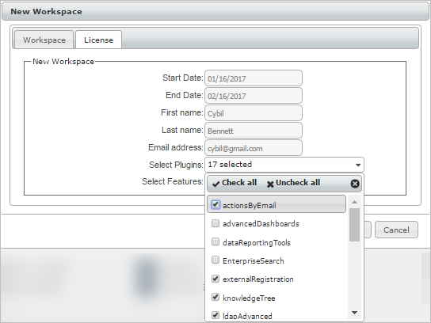
- Start Date: Start date of the license. The time value is interpreted as per the Coordinated Universal Time (UTC) standard.
- End Date: End date of the license. The time value is interpreted as per the Coordinated Universal Time (UTC) standard.
- First Name: First name of the person for whom the license will be generated.
- Last Name: Last name of the person for whom the license will be generated.
- Email Address: Email of the person for whom the license will be generated.
- Select Plugins: Plugins that will be included in the license. Plugins not selected will be available to be purchased.
- Select Features: Features that will be included in the license. Features not selected will be marked with a cross sign.
After filling out both forms, click on Test to check whether the entered values are valid and don't conflict with the names of existing MySQL databases. A new message window will open asking if you want to create the new workspace.
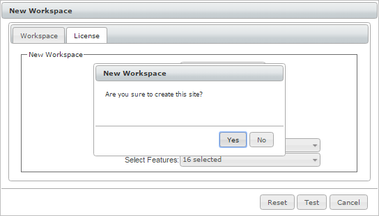
Click No to close the window and return to the creation window, or click Yes to start the creation of the new workspace. After the workspace has been created, a new message window will appear to confirm that the workspace was created:
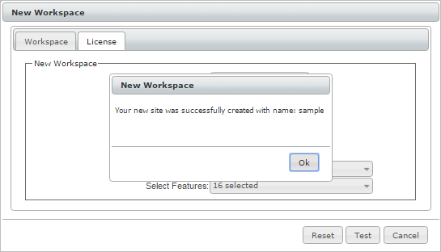
The workspace that was created will be added to the list of existing workspaces:
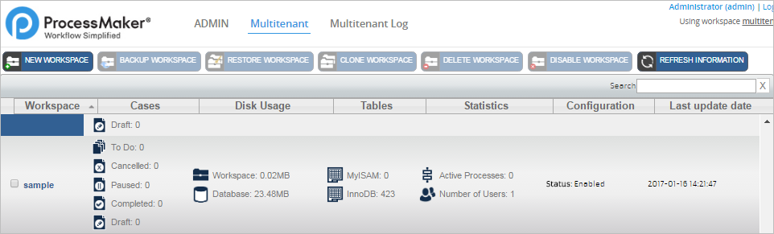
When accessing the new workspace, it won't be necessary to upload a license file. The details of the license created with the workspace will be displayed inside the Plugins section under the Admin tab. Plugins that weren't included in the license will be available through the Buy Now button.
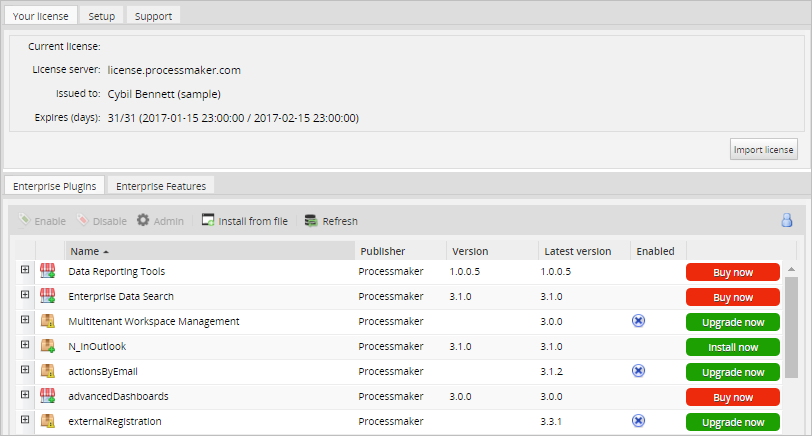
Backup Workspace
To make a backup of a workspace, first click on the name of the workspace to select it. When it is highlighted in a light blue color, go to the main menu and select the Backup Workspace option.
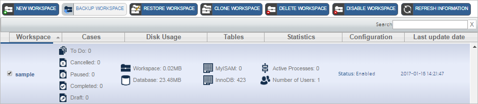
A new window will open where a short description must be entered for the workspace backup. Note that the description is limited to 20 characters long.
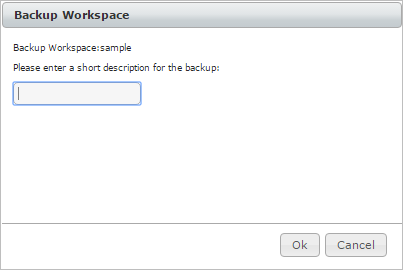
After entering the description, click on Ok to start the backup operation, or click on Cancel to close the window and return to the previous list. A message will appear indicating that the backup operation will run in the background:
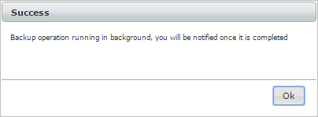
And the workspace status will change to Backing Up:
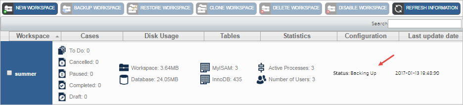
Do not forget that to finish backing up the workspace, it is necessary to run the mttCron.php script.
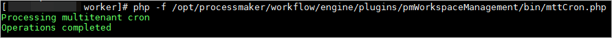
Once the workspace backup process has finished, the workspace status will be set back to Enabled and the following email message will be sent to the user who executed this operation:

Note that the backup file won't be listed in the workspace management list.
Restore Workspace
To restore a workspace from a previous backup, first select the workspace that will be restored. When it is highlighted in a light blue color, click on the Restore Workspace option:
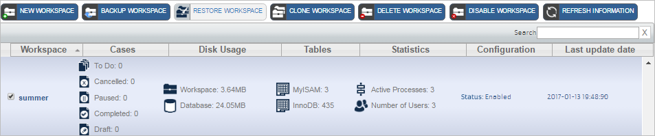
The following window will display a list of the available backups of the selected workspace. Besides the description of the backup, the list includes the ProcessMaker version in which the backup was made.
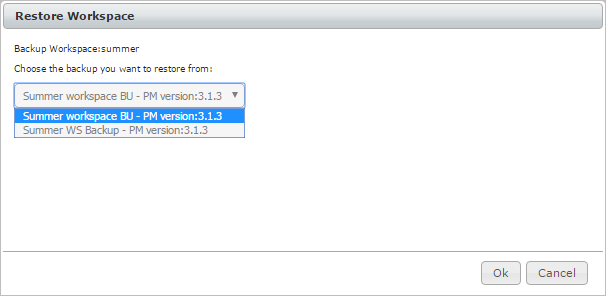
Select the backup version and click on Ok, the following message will display, indicating that the operation will be running in background:
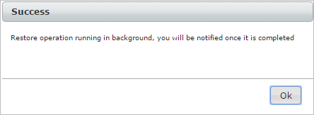
And its status will change to Restoring:

The pending restore operation will be completed the next time the mttCron.php file is executed.
When the restore operation finishes, the following notification will be sent to the user who executed this operation. Note the Email configuration must be set.
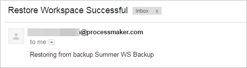
Clone Workspace
This option copies all existing data of a workspace into an existing or new workspace. First, select the workspace to be copied and click on Clone Workspace.
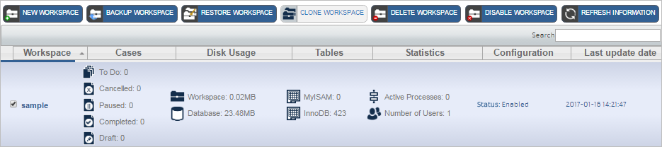
The following window will open.

- Source workspace: The name of the selected workspace to be cloned.
- Create clone from: The workspace version. By default, it is set as “Current Version”. Nevertheless, if one or more backups of the workspace exist they will be listed in the dropdown list.
- Target workspace: The workspace where the copy will be made. By default, it shows the New Workspace option; nevertheless, it is possible to clone a workspace into another workspace. Select one workspace among the existing workspaces in the list. Remember that all data of the workspace selected will be lost when the cloning is done.
- New workspace name: The name of the new workspace. This field is only available if the previous field is set as New Workspace.
Click Cancel to cancel the operation, or click Ok to start the cloning of the workspace.
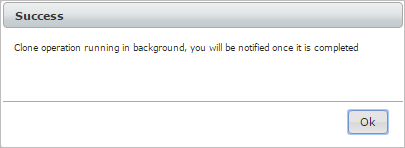
The workspace status will change to Cloning, and if one of the existing workspaces was selected, its status will change to Overwriting.

The pending cloning operation will be completed the next time the mttCron.php script is executed.
When the cloning operation finishes, the following notification will be sent to the user who executed this operation. Note that the email configuration must be set to sent the notification.
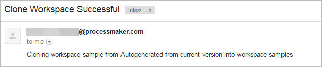
Delete Workspace
Select this option to completely delete all workspace data. Select the workspace to delete, then click the Delete Workspace option.
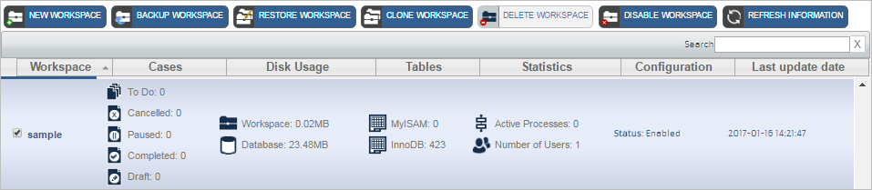
A message window will ask if you really want to delete the selected workspace.
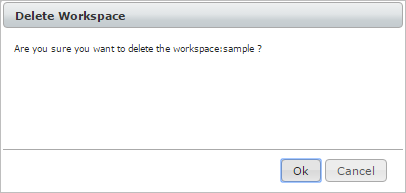
Click Ok to delete the workspace. The delete operation will run in background.
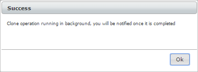
The workspace status will change to Deleting.
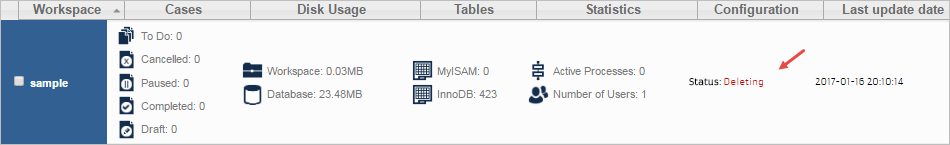
As soon as the mttCron.php script is executed and the Refresh Information button is clicked, the workspace will be removed from the list. Also, when the delete operation finishes, the following notification will be sent to the user who executed this operation.
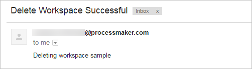
Disable Workspace
This option allows a workspace to be disabled, so it will not be available if a user wants to access it. Select a workspace and click the Disable Workspace option.
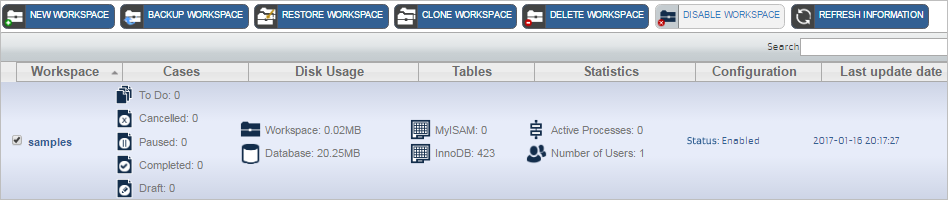
A message dialog will ask the user for confirmation to disable the workspace.
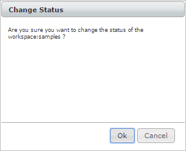
Click Ok to disable the workspace. Another window will open with a success or fail message.
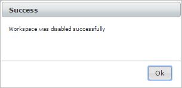
The status of the workspace will be changed to Disabled.
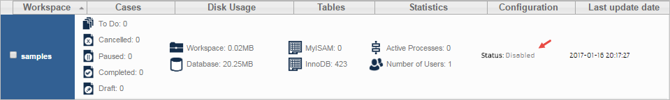
To enable the workspace, select the workspace and the Enable Workspace option will become available in the main menu.
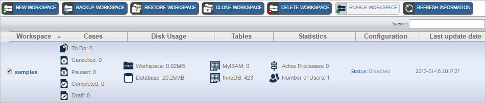
Once the workspace is enabled the following message will appear:
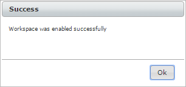
Refresh Information
Click the Refresh Information button to refresh the information of one or more workspaces. The following message window will open.
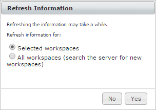
This message warns the user that the process may take a while, and lets the user choose between refreshing a few selected workspaces or refreshing all of them.
Click Yes to start the refreshing process.
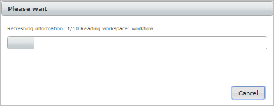
Once finished, the following message will be displayed.
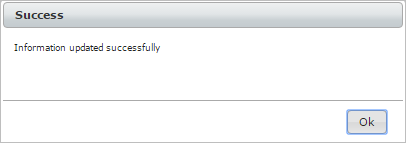
Admin
Managing Roles and Permissions
The super user that was created during the initial configuration of the Multitenant workspace has the PROCESSMAKER_ADMIN role, which has the following permissions to access all the functions in the Workspace Management interface:
| Permissions | Description |
| MTT_MULTITENANT | Access to the Multitenant tab. |
| MTT_LIST_ALL_WORKSPACES | Ability to view the list of available workspaces. |
| MTT_NEW_WORKSPACE | Ability to create new workspaces. |
| MTT_BACKUP_WORKSPACE | Ability to backup workspaces. |
| MTT_RESTORE_WORKSPACE | Ability to restore workspaces from a backup file. |
| MTT_CLONE_WORKSPACE | Ability to clone workspaces. |
| MTT_DELETE_WORKSPACE | Ability to delete workspaces. |
| MTT_ENABLE_DISABLE_WORKSPACE | Ability to disable or enable a workspace. |
| MTT_REFRESH_WORKSPACES_INFO | Ability to refresh the workspace management interface. |
| MTT_MULTITENANT_LOG | Access to the Multitenant log |
Additional users can be created with these permissions by going to Admin > Users and creating users with the PROCESSMAKER_ADMIN role. To give users access to some of the above funcions, but not all of them, then create a new role and assign some of the permissions to that role. Make sure to include the PM_LOGIN permission in the new role, so users can log in to ProcessMaker. Then, assign users to that new role with limited functions.
Warning: When creating a new role, it is not recommended to add the PM_CASES permission with Multitenant permissions to a user's role. If a role is assigned with both the PM_CASES permission and the Multitenant permissions, the ProcessMaker Cases menu will be shown on the Multitenant interface, which changes the entire appearance of the Multitentant interface.
Plugins Manager
The Plugins Manager section allows to add functionalities and customize the interface of the Multitenant plugin and its workspace. To see the list of plugins installed in ProcessMaker, go to the ADMIN menu and click on the Plugins Manager option in the left sidebar:
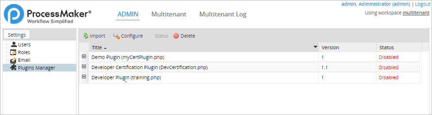
Import a Plugin
To import a new plugin, click on the Import button in the toolbar. Then, select a plugin's tar file to upload to ProcessMaker.

Configure a Plugin
This option is only available if a plugin contains a package that includes many plugins. Choose a plugin from the list and then click on the Configure button. A new list with many plugins will be displayed.
Enable and Disable a Plugin
A plugin status is displayed as Enabled or Disabled in the Plugins Manager list.
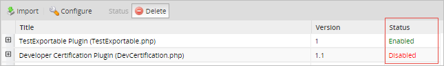
To change the status, select the plugin in the list and click on the Status option in the toolbar. Note that the Status option will change to Enable or Disable depending on the plugin's current status.
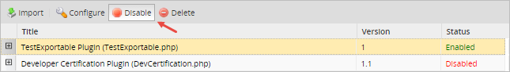
Delete a Plugin
To delete a plugin, select the plugin in the list, click on the Delete button in the toolbar and confirm the action by clicking on the Yes button.
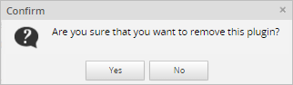
Multitenant Log
The multitenant log is available to users with the MTT_MULTITENANT_LOG permissions assigned to their role. The multitenant log records can be used to check what actions users have executed.
Search Panel
This section allows users to search for information using the following criteria:
-
Date from: Search for the operations made from a certain date. Click inside the textarea to enable the date picker:
- Date to: Search for the operations that were executed last. Click inside the textarea to enable the date picker:
- Operation: Search for the following operations: Any, backup, restore, clone, delete, disable, enable and create workspaces.
- Result: Filter information according to two results: Successful and Unsuccessful.
- IP Address: Search results according to the IP Address from where the operations were executed.
- Content: Search the information listed in the description and details columns.
The number of workspaces will be listed in the panel. Each item in the list shows the logs generated by the Workspace Management plugin. It shows the following details:
- ID
- Date Time
- IP
- Action
- Type
- Description
- Details
To view the log entry of any of them, click on the item and a new window will open:
For instance, if looking for information about successful cloning operations, the results will be:
Executing mttCron.php
In order for pending actions to be executed in the Multitenant Workspace Management plugin, the mttCron.php file must be executed. This file can be manually executed by opening a command-line terminal on the server where ProcessMaker is installed and issuing the following commands:
Example in Linux/UNIX:
Example in Windows:
Note: When running cloud servers, make sure to use the proper permissions for web server users as Apache or NGINX. For more details about how to configure permissions for web server users, see Cron Scripts.
It can take mttCron.php up to an hour to clone or restore a workspace, so be prepared for a long wait if one of those actions is being executed.
When mttCron.php has finished, it will display the words :
Note: If an error occurs while restoring a workspace, then redo the restore operation. If the cloning of a workspace is cut short and does not complete, the following error message will be displayed when the Refresh Information button is clicked:
There is no way to continue when the cloning of a workspace has been cut short. The only solution is to delete the files and database that were created by cloning and clone the workspace again. The workspace files to be deleted are located at {INSTALL-DIRECTORY}/shared/sites/{CLONE-NAME}. If using Linux/UNIX, the root user on the ProcessMaker server can delete the cloned workspace files with the following command in a terminal:
Then, log in to MySQL as the root user and delete the cloned workspace database, which is a database named wf_{CLONE-NAME}. For example:
mysql> show databases;
mysql> drop database wf_myclone;
mysql> exit;
It is recommended to set the mttCron.php file to periodically execute on the server where ProcessMaker is installed, either as a cron job in Linux/UNIX or a Scheduled Task in Windows.
Manage Workspaces Through REST API
The following REST endpoints are used by the Multitenant Workspace Management plugin to return information, enable or disable and delete workspaces. They are defined in workflow/engine/plugins/pmWorkspaceManagement/src/Services/Api/PmWorkspaceManagement/Management.php.
Remember that the multitenant workspace works as a single workspace. Therefore, the external application to call these endpoints must be registered in:
http://{pm-server}/sysmultitenant/en/neoclassic/oauth2/applications
Get Workspace Information: GET /pmworkspacemanagement/management
Get the list of workspaces.
- GET /api/1.0/multitenant/pmworkspacemanagement/management
Example:
If successful, then the HTTP status code is set to 200 and an array of workspace objects is returned.
Response
Content-Type: application/json
{
"status": "success",
"data": {
"workflow": {
"wksUid": "83025909958792f213b5353070805653",
"catUid": null,
"catName": null,
"workspaceName": "workflow",
"totalCases": {
"todo": "6",
"cancelled": "0",
"paused": "0",
"completed": "20",
"draft": "14"
},
"fileDiskUsage": "16.4732",
"dataBaseDiskUsage": "70.1121",
"totalActiveProcesses": "59",
"numberOfUsers": "5",
"totalTables": {
"MyISAM": "15",
"InnoDB": "516"
},
"status": "1",
"updateDate": "2017-01-16 20:56:38",
"logo": null
},
{
...
}
}
}
Create a Workspace: POST /pmworkspacemanagement/management
Create a workspace.
- POST /api/1.0/multitenant/pmworkspacemanagement/management
POST Parameters:
-
Name Type Description name String Workspace name. username String Workspace user name. password String Workspace password.
Optional Parameters:
-
Name Type Description name String Workspace name. database String The name of the database that will hold data about processes, cases, users, report tables, etc. If not included, the database will be named as: "wf_<workspace_name>". startDate Datetime Start date of the license. The time value is interpreted as per the Coordinated Universal Time (UTC) standard. If not included, the default value will be the current datetime of the endpoint execution. endDate Datetime End date of the license. The time value is interpreted as per the Coordinated Universal Time (UTC) standard. If not included, the default value will be the current datetime plus 3 months. firstName String First name of the person for whom the license will be generated. If not included, the default value will be: "Processmaker" lastName String Last name of the person for whom the license will be generated. If not included, the default value will be: "Inc". emailAddress String Email of the person for whom the license will be generated. If not included, the default value will be: "support@processmaker.com".
Request Example:
"name": "sample123",
"username": "admin",
"password": "admin"
}
Response:
If successful, then the HTTP status code is set to 201 and the following array is returned.
Content-Type: application/json
{
"status": "success",
"data": null
}
Enable or Disable a Workspace: PUT /pmworkspacemanagement/management/{wksUid}
Enable or disable a workspace. If the workspace is enabled, then when executing this endpoint, the workspace will become disabled and vice versa.
- PUT /api/1.0/multitenant/pmworkspacemanagement/management/{wksUid}
URL Parameters:
Parameter Description Example wksUid Workspace UID. /api/1.0/multitenant/pmworkspacemanagement/management/947397617587d43352fe932065395918
PUT Parameters:
None.
Response Example:
If successful, then the HTTP status code is set to 200 and the following array is returned.
{
"status": "success",
"data": {
"sample123": {
"wksUis": "947397617587d43352fe932065395918",
"previewStatus": "Enabled",
"newStatus": "Disabled"
}
}
}
Delete a Workspace: DELETE /pmworkspacemanagement/management/{wksUid}
Delete a workspace. Do not forget that to complete the deleting process, the mttCron.php must be executed.
- DELETE /api/1.0/multitenant/pmworkspacemanagement/management/{wksUid}
URL Parameters:
Parameter Description Example wksUid Workspace UID. /api/1.0/multitenant/pmworkspacemanagement/management/947397617587d43352fe932065395918
Response:
If successful, then the HTTP status code is set to 204 and no object is returned. The status of the workspace will be changed to Deleting.